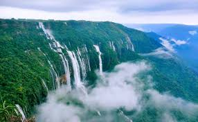
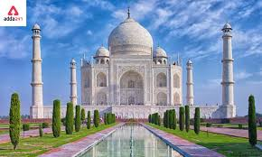

Famous places

RED FORT
The Red Fort, also known as Lal Qila, is a historic fort and palace complex in Old Delhi, India. Here's some information about the Red Fort and the best season to visit:
About Red Fort:
1. Built:1648 by Mughal Emperor Shah Jahan
2. Architecture: Mughal, Persian, and Indian styles
3. Purpose: Imperial palace and military fortress
4. Materials: Red sandstone and marble
5. Layout: Rectangular shape with walls, gates, and gardens
6. Main Attractions:
- Diwan-i-Khas (private audience hall)
- Diwan-i-Am (public audience hall)
- Mumtaz Mahal (palace)
- Khas Mahal (private palace)
- Rang Mahal (colorful palace)
- Hammam (royal bath)
Best Season to Visit:
1. October to March: Winter season, pleasant weather (10-20°C/50-68°F)
2. February to April: Spring season, mild temperatures (15-25°C/59-77°F)
3. Avoid Summer (April-June): Hot weather (35-45°C/95-113°F)
4. Avoid Monsoon (July-September): Heavy rainfall and humidity
Festivals and Events:
1. Independence Day (August 15): Flag hoisting ceremony
2. Republic Day (January 26): Parade and cultural events
3. Delhi Festival (November): Cultural performances and food stalls
4. Qawwali nights (Thursday-Sunday): Sufi music performances
Nearby Attractions:
1. Jama Masjid (mosque)
2. Chandni Chowk (market)
3. India Gate (war memorial)
4. National Museum (art and history)
5. Connaught Place (shopping and dining)

Leh Ladakh
Leh Ladakh, a stunning region in the Indian Himalayas!
About Leh Ladakh:
1. Location: Jammu and Kashmir, India
2. Elevation: 3,500 meters (11,483 ft) above sea level
3. Geography: Mountainous terrain, rivers, and valleys
4. Culture: Buddhist majority, influenced by Tibetan and Indian traditions
5. Language: Ladakhi, Tibetan, Hindi, and English
Best Season to Visit:
1. Summer (June to August): Warm weather (15-25°C/59-77°F), ideal for trekking and sightseeing.
2. Autumn (September to October): Mild temperatures (10-20°C/50-68°F), scenic landscapes, and festivals.
3. Spring (April to May): Cooler weather (10-20°C/50-68°F), blooming flowers, and fewer tourists.
Festivals and Events:
1. Losar Festival (February/March): Tibetan New Year.
2. Buddhist festivals (throughout the year): Hemis Festival, Thiksey Festival, etc.
3. Ladakh Festival (September): Cultural performances, food, and crafts.

MEGHALAYA
About Meghalaya:
1. Name: "Abode of Clouds"
2. Location: Northeastern India, bordered by Assam and Bangladesh
3. Capital: Shillong
4. Population: Approximately 3.2 million
5. Language: Khasi, Garo, English
6. Culture: Tribal communities (Khasi, Garo, Jaintia)
Best Season to Visit:
1. Summer (April to June): Pleasant weather (15-25°C/59-77°F)
2. Autumn (September to November): Mild temperatures (10-20°C/50-68°F)
3. Spring (March to April): Blooming flowers, fewer tourists
Festivals and Events:
1. Shad Suk Mynsiem (April): Khasi festival
2. Wangala Festival (November): Garo harvest festival
3. Behdiengkhlam (July): Jaintia festival
4. Autumn Festival (September): Music, dance, and food

GOA BEACHES
Goa Beaches:
Goa, a tropical paradise on India's west coast!
1. Palolem Beach: Secluded, picturesque beach in southern Goa
2. Agonda Beach: Quiet, serene beach with scenic views
3. Colva Beach: Vibrant, popular beach in southern Goa
4. Baga Beach: Lively, popular beach in northern Goa
5. Calangute Beach: Longest beach in Goa, ideal for water sports
6. Candolim Beach: Quiet, upscale beach with luxury resorts
7. Anjuna Beach: Famous for flea markets and trance parties
8. Vagator Beach: Scenic beach with dramatic cliffs and rocks
9. Morjim Beach: Turtle nesting site, peaceful atmosphere
10. Ashwem Beach: Secluded, picturesque beach in northern Goa
Best Season to Visit:
1. Winter (November to February): Pleasant weather (20-30°C/68-86°F)
2. Shoulder Season (March to April): Warm weather (25-35°C/77-95°F)
3. Monsoon (June to September): Green landscapes, fewer tourists

TAJ MAHAL
About Taj Mahal:
The Taj Mahal, a breathtaking monument of love!
1. Location: Agra, Uttar Pradesh, India
2. Built: 1632-1653 by Mughal Emperor Shah Jahan
3. Architecture: Mughal, Persian, and Islamic styles
4. Materials: White marble, red sandstone, and black marble
5. Purpose: Mausoleum for Shah Jahan's wife, Mumtaz Mahal
Best Season to Visit:
1. Winter (October to February): Pleasant weather (10-20°C/50-68°F)
2. Spring (March to April): Mild temperatures (15-25°C/59-77°F)
3. Autumn (September to November): Comfortable weather (15-25°C/59-77°F)